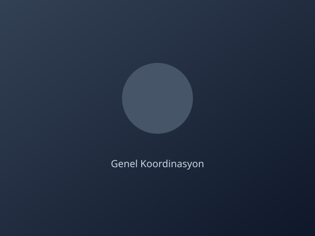
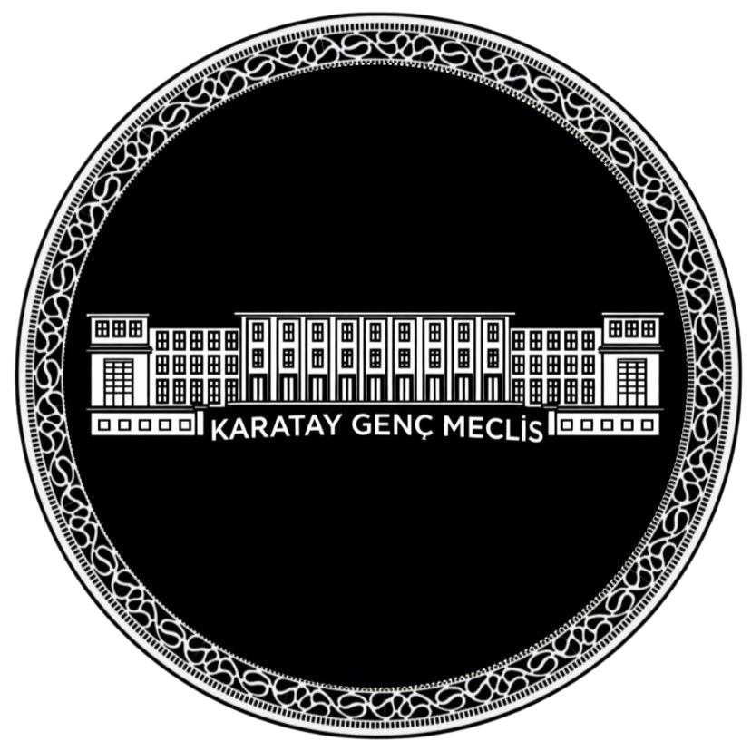

Proje Sahibi Okul
Mevlana Kız Anadolu İmam Hatip Lisesi
Programın kurumsal yürütücüsü ve ana organizasyon sahibi.

Proje sahibi okul, kurucu ekip ve paydaş kurumlarla etkinliğin organizasyon yapısı şeffaf biçimde yürütülür.

Programın kurumsal yürütücüsü ve ana organizasyon sahibi.

Kurgu, koordinasyon ve proje vizyonunun ana sorumlusu.
Karatay Gençlik Meclisi, operasyonel süreç ve gençlik organizasyonu desteği sağlar.
Karatay Belediyesi, etkinlik altyapısı ve yerel destek süreçlerini üstlenir.
Ali Ulvi Kurucu Gençlik Merkezi, Konya/Karatay.
Hazırlık sürecinden kısa videolar etkinlik yaklaşırken yayınlanacaktır.
İlk brifing ve rol dağılımı.
Prova oturumu ve divan pratiği.
Komisyon masa düzeni ve süre ölçer.
Parti kulisleri ve mutabakat provası.
Basın masası ve iç iletişim.
Teknik kontrol listesi.
Çağrı ve başvuru formu. Komisyon ön tercihleri toplanır.
Ön seçim ve eğitim paketi. Okuma listesi, prosedür özeti.
Canlı brifing. Çevrim içi kurul toplantısı ve soru-cevap.
Son hazırlık ve saha provası. Mekân keşfi ve görev teyidi.
Etkinlik günleri. Üç günlük yoğun simülasyon.